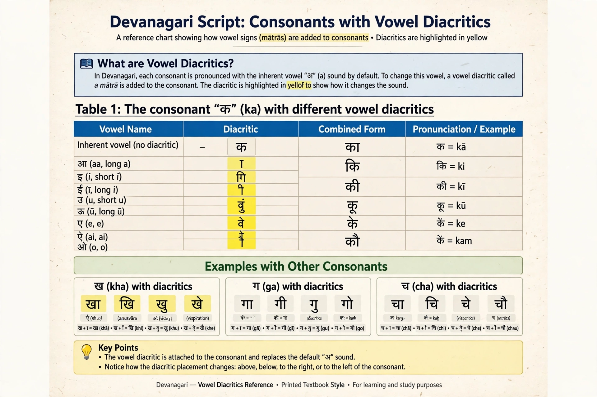

Abugida

| Abugida | |
| Type | Writing system (alphasyllabary) |
|---|---|
| Examples | Devanagari, Bengali, Tamil, Telugu, Thai, Ethiopic, Canadian Aboriginal syllabics |
| Term from | Ethiopic words ʾä-bu-gi-da (first four signs) |
An abugida, also called an alphasyllabary, is a segmental writing system in which consonant–vowel sequences are written as units: each consonant letter carries an inherent vowel (usually /a/), and other vowels are indicated by modifying the letter with diacritics or attached strokes. A special mark — the virama in Indic scripts — cancels the inherent vowel.
How it works
In Devanagari, the letter क by itself reads ka. Adding signs produces कि ki, कु ku, के ke, and so on, while क् (k with virama) is a bare consonant that can combine into conjuncts such as क्ष kṣa. Vowel signs may be placed before, after, above, or below the consonant they follow in pronunciation, as in कि, where the sign is written to the left of the consonant but pronounced after it.
Distribution
Abugidas are used across South and Southeast Asia — the great family of Brahmic scripts descending from the ancient Brahmi script — and in Ethiopia and Eritrea, where the Ge'ez script developed its own alphasyllabic system. The Canadian Aboriginal syllabics used for Cree and Inuktitut form another family, in which vowel quality is shown by rotating the consonant sign.
Terminology
The term was proposed by Peter T. Daniels, by analogy with his coinage abjad, from the first four syllables of the Ethiopic script in its traditional order. Abugidas stand between alphabets (independent vowel letters) and syllabaries such as Japanese kana (a separate sign for each syllable).